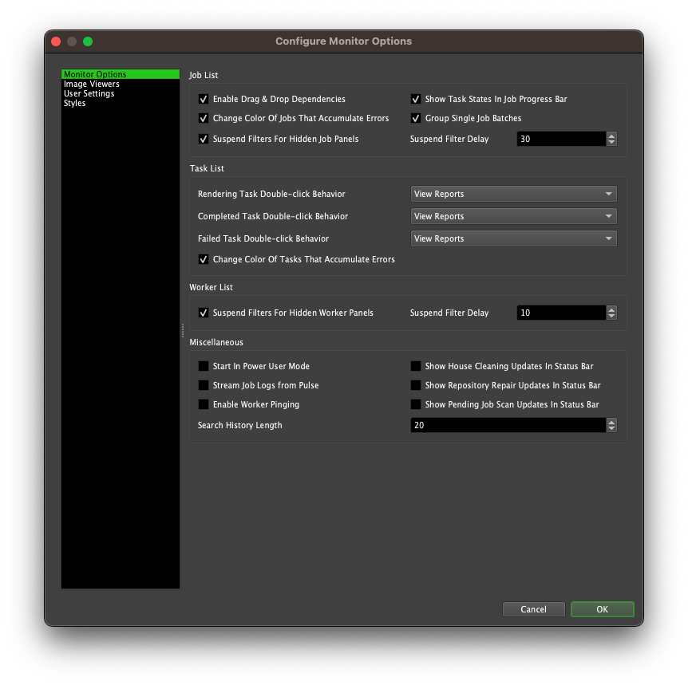
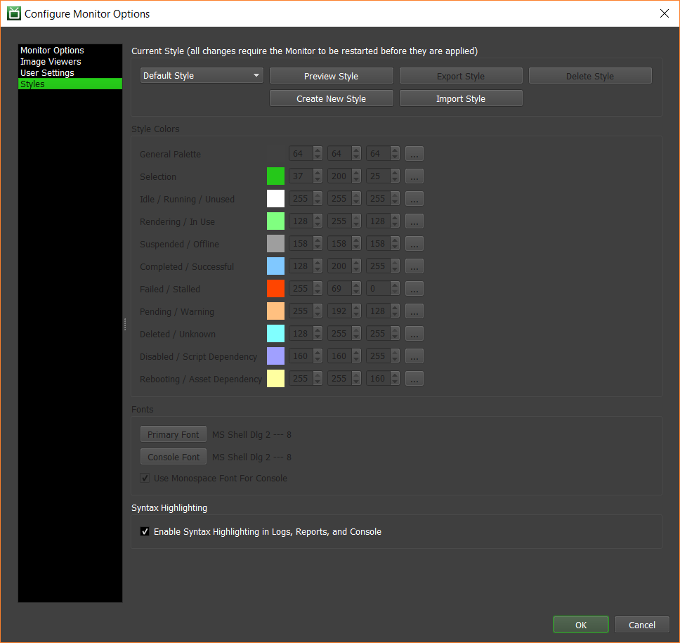
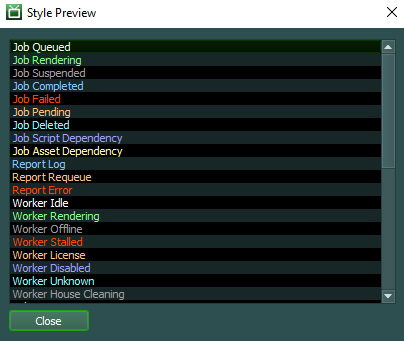
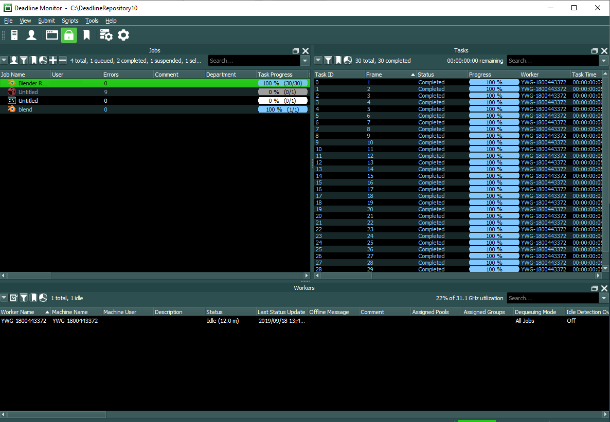

Monitor and User Settings¶
Overview¶
You can customize your Monitor options, User settings, and Styles in the Monitor Options. On Windows and Linux, select Tools -> Options, and on macOS, select Deadline Monitor -> Preferences. You can also open these settings from the main toolbar in the Monitor.
Monitor Options¶
The Monitor options allow you to customize a few aspects of the Monitor.
Job List
Enable Drag & Drop Dependencies: If enabled, you can drag jobs and drop them on other jobs to set dependencies. Note that you must restart the Monitor for this setting to take effect. See the Controlling Jobs documentation for more information on setting dependencies this way.
Show Task States In Job Progress Bar: If enabled, the job progress bars will show the states of all the tasks for the job.
Change Color Of Jobs That Accumulate Errors: If enabled, jobs will change color from the Rendering color to the Failed color as they accumulate errors. See the Styles section further down for more on the colors.
Group Single Job Batches: If enabled, batches that contain only one job will still be grouped in the job list.
Suspend Filters for Hidden Job Panels: If enabled, filtering calculations will be suspended for Job Panels when they are hidden. This improves overall performance of the Monitor when multiple panels are open, but requires recalculation of the entire filter when restoring hidden panels.
Suspend Filter Delay This setting introduces a delay before the filters of a hidden Job panel are suspended, as described above. This value is in seconds.
Task List
Task Double-click Behavior: Customize the double-click behavior of rendering, completed, and failed tasks in the task list. Double-clicking on tasks in other states will bring up the task reports panel. These are the available options:
View Reports: This will bring up the task reports panel for the selected task.
Connect To Worker Log: This will connect to the Worker that is rendering or has rendered the selected task.
View Image: This will open the output image for the selected task in the default viewer.
Change Color Of Tasks That Accumulate Errors: If enabled, tasks will change color from the Rendering color to the Failed color as they accumulate errors. See the Styles section further down for more on the colors.
Worker List
Suspend Filters for Hidden Worker Panels: If enabled, filtering calculations will be suspended for Worker panels when they are hidden. This improves overall performance of the Monitor when multiple panels are open, but requires recalculation of the entire filter when restoring hidden panels.
Suspend Filter Delay This setting introduces a delay before the filters of a hidden Worker panel are suspended, as described above. This value is in seconds.
Miscellaneous
Start In Power User Mode: If enabled, the Monitor will start with Power User mode enabled. If Power User mode is password protected, you will be prompted for the password when you start the Monitor.
Stream Job Logs from Pulse: If enabled, the Monitor will stream the job logs from Pulse instead of reading them directly from the Repository. While streaming the logs this way is typically slower, it can be useful if the connection to the Repository server is slow.
Show House Cleaning Updates In Status Bar: If enabled, the Monitor status bar will show when the last House Cleaning was performed.
Show Repository Repair Updates In Status Bar: If enabled, the Monitor status bar will show when the last Repository Repair was performed.
Show Pending Job Scan Updates In Status Bar: If enabled, the Monitor status bar will show when the last Pending Job Scan was performed.
Enable Worker Pinging: If enabled, the Worker List will show if Worker machines can be pinged or not.
Search History Length: The number of previous search entries that are stored in the Search Boxes in the Monitor. Setting this to 0 will disable the search history.
Image Viewers¶
Configure the image viewer applications that the Job and Task panels uses to view output images. See the Controlling Jobs documentation for more information on viewing job output.

You can specify up to three image view applications with the following options:
Executable: The path to the image viewer executable you want to use.
Arguments: The arguments to pass to the image viewer executable. The default is “{FRAME}”, which represents a path to a single image file for a task. More information about the support argument tags can be found below.
Name: The viewer name, which is used in the menu item created for this image viewer (defaults to the executable name if left blank).
Viewer Supports Chunked Tasks: If enabled, the tasks image viewer dialog will not be shown when viewing the output for jobs with Frames Per Task greater than 1.
The following tags are supported in the custom viewer arguments, and can be combined with other arguments that the image viewer accepts:
{FRAME}: This represents the task’s frame file. For example: /path/to/image0002.png
{SEQ#}: This represents the task’s frame sequence files, using ‘#’ as the padding. For example: /path/to/image####.png
{SEQ?}: This represents the task’s frame sequence files, using ‘?’ as the padding. For example: /path/to/image????.png
{SEQ@}: This represents the task’s frame sequence files, using ‘@’ as the padding. For example: /path/to/image@@@@.png
{SEQ%}: This represents the task’s frame sequence files, using ‘%d’ as the padding. For example: /path/to/image%04d.png
{SEQ$}: This represents the task’s frame sequence files, replacing the frame number with ‘$F#’, where # is the length of the padding. For example: /path/to/image0002.png becomes /path/to/image$F4.png.
You can also specify the Preferred Image Viewer, which is the default image viewer to use when viewing output files. If set to DefaultViewer, the system’s default application for the output file type will be used.
User Settings¶
You can configure you user settings here.

Notification Settings
If you would like to receive email notifications for your job, you can specify your email address in the Notification Settings and enable the option to receive them. Note that this requires your administrator to configure the email settings in the Repository Options.
If you would like to receive popup message notifications for your job, you can specify your machine name in the Notification Settings and enable the option to receive them. Note that this requires the Launcher to be running on the machine that you specify here.
You can also choose the types of notifications that you would like to receive. The available notifications are:
Job Completed: If enabled, you will receive notifications for your jobs when they complete.
Job Failed: If enabled, you will receive notifications for your jobs when they fail.
Job Warning: If enabled, you will receive notifications for your jobs when they generate a certain number of errors. The error count is configured by your administrator.
Job Timeout: If enabled, you will receive notifications for your jobs when they timeout.
Render Job As User Settings
If the Render Job As User option is enabled in the job settings in the Repository Options, these options will be used to launch the rendering process as the specified user. For Linux and MacOS, only the User Name is required. For Windows, the Domain and Password must be provided. See the Render Jobs As Job’s User documentation for more information.
Web Service Authentication Settings
You can also specify a Web Service password. This may be required to use with the Deadline Web Service if authentication has been enabled and empty passwords are not allowed. It is not recommended to allow empty passwords with the Web Service.
Enable Ability To Change Default Repository Option
This option controls how Deadline will change the default Repository when you connect to a different Repository in the Monitor. When you change to a new Repository, the action taken by Deadline will depend on the chosen option:
Ask: A message will ask you whether or not you want to set the new Repository as the default Repository.
Always: The new Repository will always be set as the default Repository.
Never: The default Repository will never be changed to the new Repository.
Styles¶
Warning
Only import style files from trusted sources.
The Styles panel can be used to customize the color palette and the fonts that the Deadline Applications use. Custom styles can be saved and imported as well. Syntax highlighting can also be configured here.
By default, the current style will be Default Style, which is the style shipped with Deadline and cannot be modified in any way. Previously saved styles will be available in the Saved Styles list. Custom styles can be created and deleted by clicking the Create New Style and Delete Style buttons, respectively.
Once a custom style has been selected, the style’s color palette can be modified:
The General Palette color is used to generate the colors for the various controls and text in the Deadline applications. Note that dark palettes will result in light text, and light palettes will result in dark text.
The Selection color is used to highlight selected items or text.
The remaining colors are used to color the text for jobs, tasks, Workers, etc, based on their current state. It is recommended to choose colors that contrast well with the General Palette and Selection colors to ensure the text is readable.
The style’s font can be modified as well:
Primary Font: This is the font used for almost all the text in the Deadline applications.
Console Font: This is the font used in console and log windows. By default, a monospace font is used for these windows.
Any style changes made are not saved until the Monitor Options dialog is accepted by clicking OK. Once the dialog has been accepted, the Monitor must be restarted in order to apply the style changes. In order to facilitate testing out new styles, there is a Preview Style button which opens a dialog that displays an approximation of the current style settings.
Note that the Deadline applications will always load with the style that was last selected in the Styles panel in the Monitor Options.
Note that when saving styles, all of the custom styles are saved, and when loading saved styles from disk the loaded styles will be appended to the list of styles currently present, overwriting any styles with a shared name.
Syntax Highlighting
Additional information on syntax highlighting can be found in Syntax Highlighting.
Enable Syntax Highlighting in Logs, Reports, and Console: If enabled, coloring will be added to text in logs, reports, and the console panel. The colors used are based on the current style’s color palette.
This option takes effect the next time a log, report, or the console panel is launched. However, color changes take effect the next time the Monitor is launched.

{kind=link}
{kind=link}
{kind=link}
{kind=link}